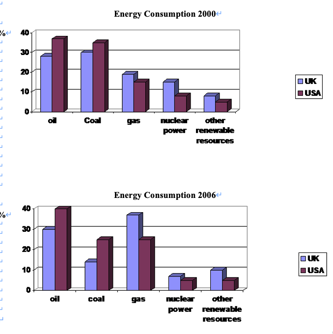

You should spend about 20 minutes on this task.
The charts below show UK and USA energy consumption in 2000 and 2006
Summarize the information by selecting and reporting the main features, and make
comparison where relevant.
You should write at least 150 words.

Word Count: 0
You should spend about 40 minutes on this task.
Write about the following topic:
Present a written argument or case to an educated reader with no specialist
knowledge of the following topic.
Nowadays more people are choosing to live with friends or alone rather than with
their families. This trend is likely to have a negative impact on
communities.
To what extent do you agree or disagree with this opinion?
You should use your own ideas, knowledge and experience and support your arguments with examples and relevant evidence.
You should write at least 250 words.
Word Count: 0